TOY
Traditional Basotho toy made with clay.
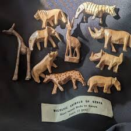Traditional Basotho toy made with clay.
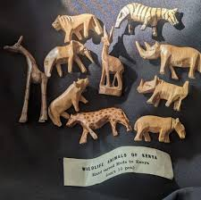Is a traditional Basotho jar made with clay.
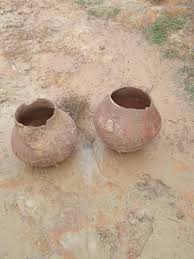Is a traditional Basotho cup (called kopi or sekha metsi). It is made with clay.
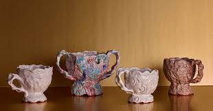Is a traditional Basotho plate (poleiti). Made with clay.
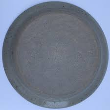A traditional Basotho hat made with grass, symbolizing Basotho culture and identity.

A traditional Basotho rod, used for protection and carried by men, symbolizing culture.
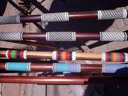Traditional earrings made with parts of animal bones.
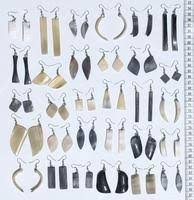A traditional Basotho cup.
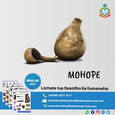Traditional Basotho dress symbolizing culture. More info
Made of beads, symbolizing Basotho culture. More info
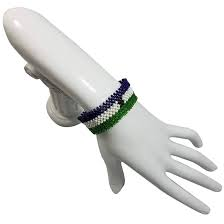Made of grass.
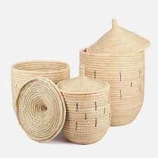Traditional pottery.
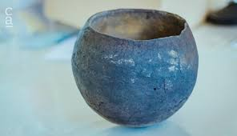Is stone and i used to (sila poone)
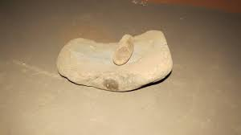traditional pottery
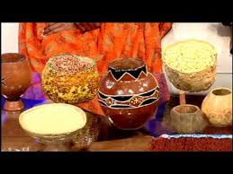